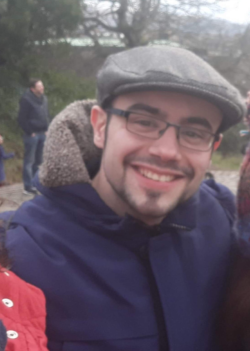
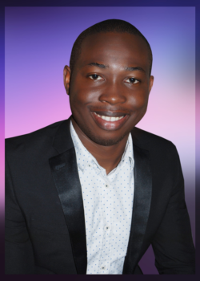
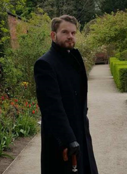

Dr Natalia Bulgakova
PI
contact: n.bulgakova[at]sheffield.ac.uk
- 2015-present: Lecturer, Department of Biomedical Sciences, University of Sheffield, UK
- 2009-2015: Research associate, Gurdon Institute, University of Cambridge, UK
- 2007-2009: Research associate, Max-Planck Institute of Molecular Cell Biology and Genetics, Dresden, Germany
- 2004-2007: PhD, Institut für Genetik, Heinrich-Heine Universität Düsseldorf, Germany

Dr Miguel Ramirez Moreno
Postdoc
contact:m.ramirezmoreno[at]sheffield.ac.uk
- 2017-Present: Research Associate, Department of Biomedical Sciences, University of Sheffield, UK
- 2013-2017: PhD, Faculty of Natural and Environmental Sciences, University of Southampton, UK
- 2011-2013: Master in Cellular and Molecular Biology, Faculty of Sciences, Universidad Autónoma de Madrid (UAM), Spain
- 2006-2011: Degree in Biology, Faculty of Sciences, Universidad Autónoma de Madrid (UAM), Spain

Dr Victor Alfred
Postdoc
contact:v.alfred[at]sheffield.ac.uk
- 2018-present: Research associate, Department of Biomedical Sciences, University of Sheffield, UK
- 2013-2017: PhD, l'Istituto FIRC di Oncologia Molecolare (IFOM), Milan. Degree awarded by Università degli Studi di Milano, Italy
- 2011-2012: MSc, University of Leicester, UK
- 2005-2009: BSc (Hons.), University of Lagos, Nigeria

Joshua Greig
PhD Student
contact:jgreig1[at]sheffield.ac.uk
- 2015-2019: PhD, Department of Biomedical Science, University of Sheffield
- 2010-2014: MSci (Hons) Biomedical Science, University of Newcastle Upon Tyne
Former lab members
Keqian Nan, MSc Student
Jessica Mcneill, summer student